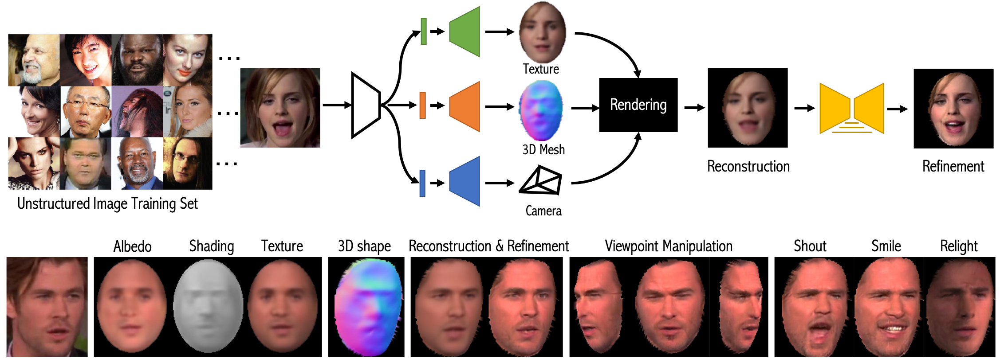
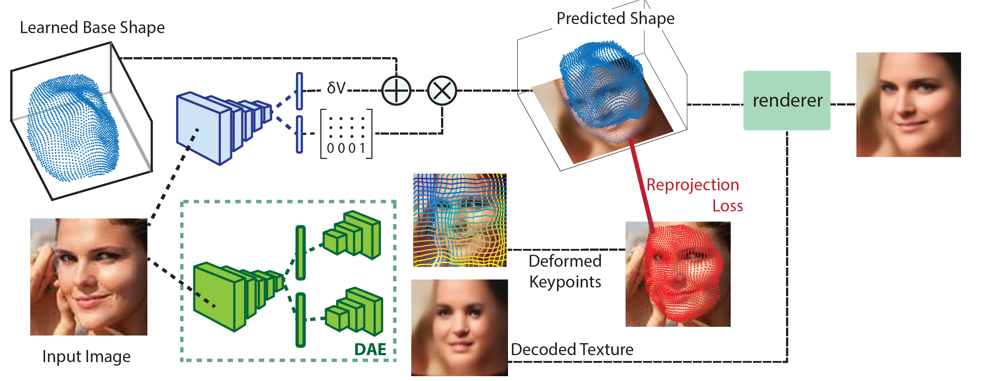

The Alan Turing Institute,
University College London
Aerial AI,
Imperial College
Stony Brook University
Aerial AI,
University College London
Abstract
In this work we introduce Lifting Autoencoders, a
generative 3D surface-based model of object categories. We bring
together ideas from non-rigid structure from motion, image formation,
and morphable models to learn a controllable, geometric model of 3D
categories in an entirely unsupervised manner from an unstructured
set of images. We exploit the 3D geometric nature of our model and
use normal information to disentangle appearance into illumination,
shading and albedo. We further use weak supervision to disentangle
the non-rigid shape variability of human faces into identity and
expression. We combine the 3D representation with a differentiable
renderer to generate RGB images and append an adversarially
trained refinement network to obtain sharp, photorealistic image
reconstruction results. The learned generative model can be
controlled in terms of interpretable geometry and appearance
factors, allowing us to perform photorealistic image manipulation
of identity, expression, 3D pose, and illumination properties.
Shape from unconstrained images

Network Architectures

Learnt shape visualisation from different viewpoints